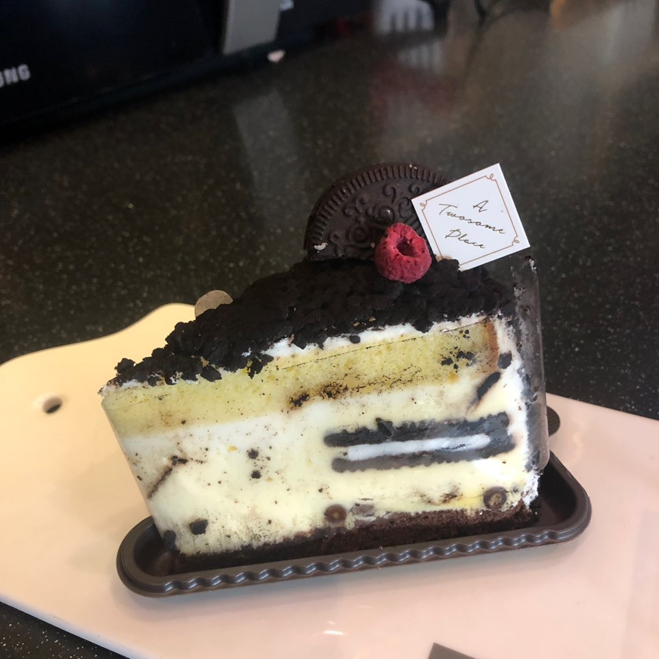

- 퀸즈 캐롯
- 딸기 레어 치즈
- 스트로베리 초코 생크림
- 비마이스트로베리
- 그뤼에르 지윤픽

시나몬향이 강하게 나는 시트 사이 사이 크림 치즈를 얹은 케이크이다. 시트에 견과류도 많이 들어있다. 이번에 캐롯 케이크가 퀸즈 캐롯으로 바뀌면서 크림 치즈가 올라가고 크기가 커졌다. 가끔 단 건 싫지만 케이크는 먹어야겠다라고 말씀하실 때 추천해 드리는데 대부분 흡족해하셔서 많이 추천해드린다. 그래도 위에 조각된 당근 모양 초콜릿 자꾸 떨어져서 힘드니까 다들 아메리카노만 드셨으면 좋겠다.

맨 왼쪽에 있는 크럼블과 말린 딸기같은게 올라가 있는 케이크인데 크림 치즈와 가운데 빵 사이에 딸기잼이 발라져있다. 상큼하고 맛있다. 오른쪽에 있는 음료는 딸기 시즌 메뉴인 스트로베리 소프트 밀크티인데 진짜 별로다. 소프트 밀크티는 정말 맛있는데 거기에 굳이 딸기를 얹었어야 했을까 라는 생각이 들 정도로 별로다. 대기업 사람들은 입맛 이상한거 같다.

투썸 케이크 중에 가장 많이 팔리는 케이크로 초코 생크림 케이크 위에 딸기가 잔뜩 올려져 있다. 초코 생크림안에 크런치가 들어 있다. 거의 이틀 굶고 먹어봤는데 한판은 다 못먹고 한 두조각 남겼다. 넘 달아서 물릴만 하면 딸기 하나씩 집어먹고 반복하다 보니까 금방 없어졌다.

나온지 몇개월 되긴 했는데 우리는 개시를 늦게 했다. 딸기가 너무 비싸다고 사장님이 툴툴 거리는거 들었다. 케이크 마진 많이 남으면서... 사장님 돈 엄청 많은데 역시 있는 사람들이 더 그러는거 같다. 하튼 케이크는 딸기 무스 케이크인데 같이 일하는 언니가 사줘서 먹어봤을 때 그냥 딸기 케이크 맛인데 무스라 부드럽고 내 입에는 엄청 달지 않고 상큼했다. 어디가서 사주고 욕은 안먹을 케이크.

치즈 케이크가 바탕에 가운데 오레오 같은 쿠키가 들어가있고 케이크 위에 쿠키 크런치가
올라가 있는데 진짜 내가 제일 좋아하는 케이크이다. 전 타임언니가 사줘서 먹고 반해서 맨날 케이크만
보면 이 케이크 얘기만 하니까 언니는 약간 먹인거 후회하는 눈치다. 살짝 냉동 돼 있을 때가
진짜 맛있다.
*올해 소소한 소원: 그뤼에르 한판 콜드브루랑 먹어보기